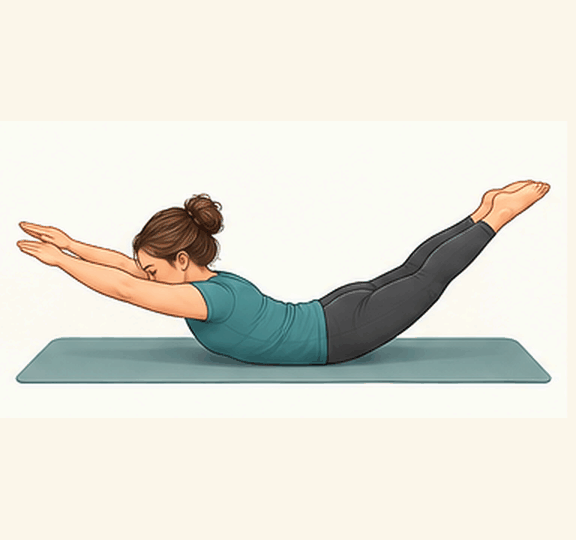
Strength · Back · Easy
Arch Body Rock
In arch body position (prone, arms and legs raised), rock forward and back maintaining shape.
3 sets × 15 reps · Rest 30s
Download GIF ↓40 of 40 Back entries have GIF demonstrations. Matching movements share one demonstration while both exercise names remain available.
Download available Back GIFs ↓
In arch body position (prone, arms and legs raised), rock forward and back maintaining shape.
3 sets × 15 reps · Rest 30s
Download GIF ↓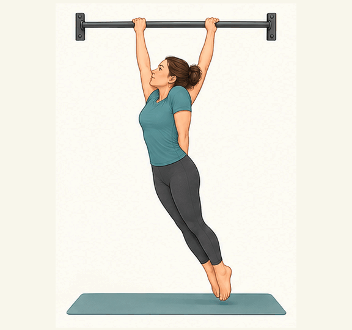
Hang from bar in arched position, pull with scapula retraction and depression.
3 sets × 8 reps · Rest 45s
Download GIF ↓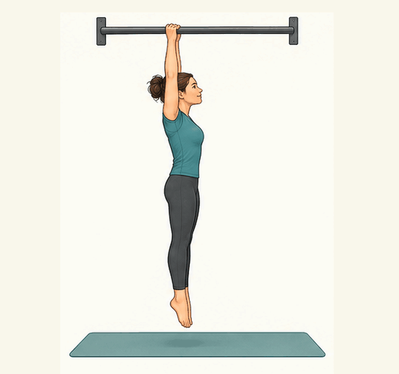
Hang from bar, alternate between arch position and hollow position in a controlled swing cycle.
3 sets × 10 reps · Rest 45s
Download GIF ↓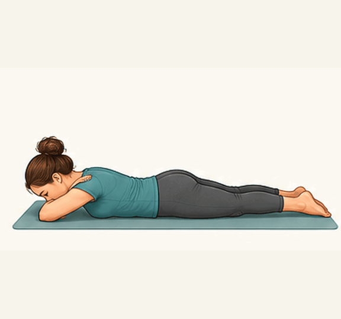
On GHD or prone on floor, hinge at hips to lower and raise torso.
Technique note: Floor back-extension variation; legs stay grounded while the chest lifts.
3 sets × 15 reps · Rest 30s
Download GIF ↓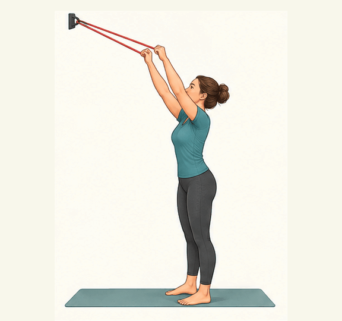
Anchor band overhead, face anchor, pull band to chest keeping arms slightly bent. Full lat contraction.
3 sets × 15 reps · Rest 20s
Download GIF ↓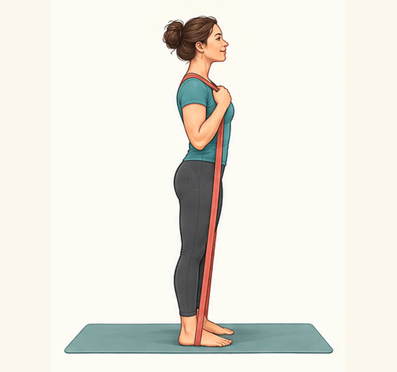
Band anchored under feet and over shoulders, hinge at hips maintaining flat back, stand tall.
3 sets × 15 reps · Rest 20s
Download GIF ↓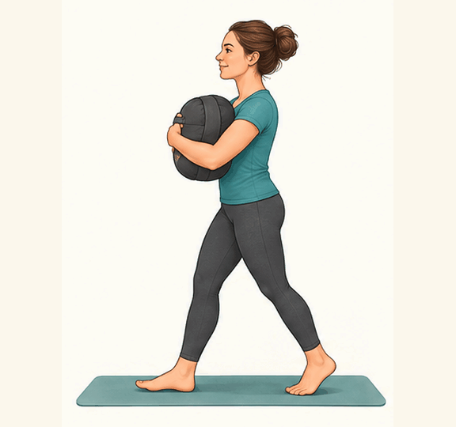
Hug a heavy bag or medicine ball to chest, walk for distance maintaining upright posture.
3 sets × 30s · Rest 30s
Download GIF ↓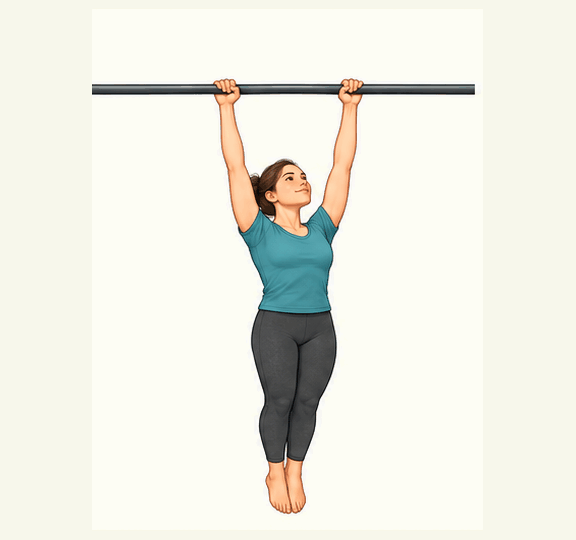
Full pull-up driving chest to touch the bar. Requires greater range and lat strength.
3 sets × 6 reps · Rest 60s
Download GIF ↓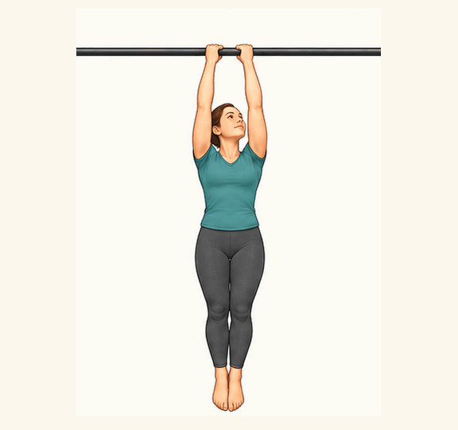
Hands close together on bar, pull chin over. More bicep involvement than wide grip.
3 sets × 8 reps · Rest 45s
Download GIF ↓
From dead hang, depress shoulders pulling body up without bending elbows. Pure scapular control.
3 sets × 12 reps · Rest 30s
Download GIF ↓
Anchor band at face height, pull toward face with elbows flared high. External rotation and rear delt.
3 sets × 15 reps · Rest 20s
Download GIF ↓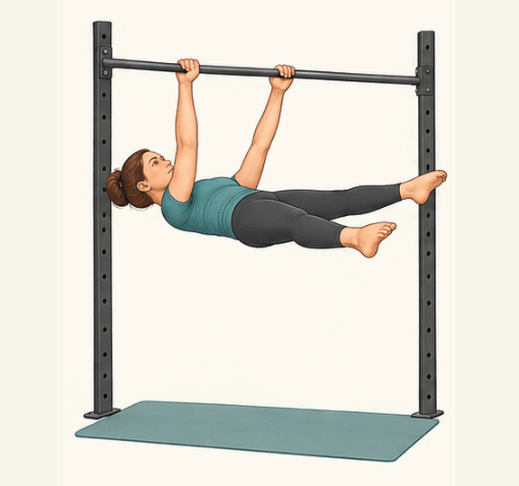
Straddle front lever hold — legs open wide, body horizontal on bar with arms straight.
3 sets × 6s · Rest 90s
Download GIF ↓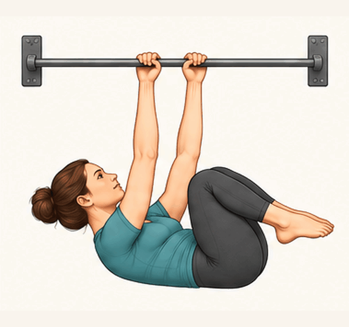
On bar, pull into tucked horizontal hold with arms straight, body parallel to floor.
3 sets × 8s · Rest 90s
Download GIF ↓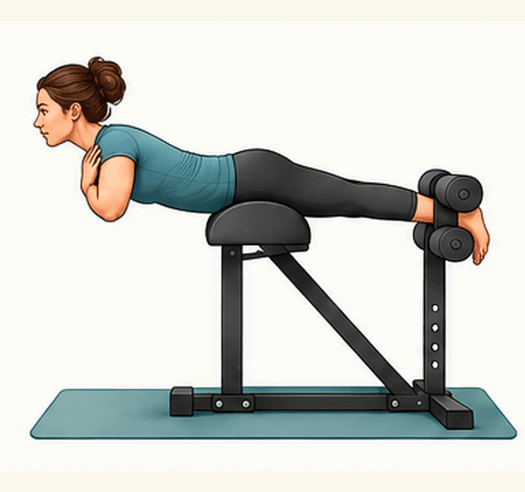
On glute-ham developer, lower torso below parallel and raise back up. Full range hip extension.
Technique note: Hip-extension version described in the library; hips supported and ankles secured.
3 sets × 12 reps · Rest 45s
Download GIF ↓
Feet hip-width, hinge at hips with flat back until torso parallel to floor. Drive hips forward to stand.
Technique note: Unloaded hip hinge demonstrated with a dowel to show a neutral spine.
3 sets × 12 reps · Rest 30s
Download GIF ↓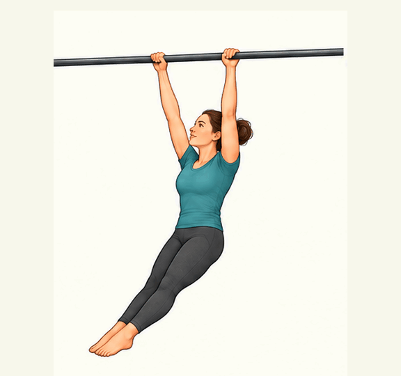
Maintain strict hollow body (no arch) throughout pull-up. Gymnastics-specific pulling pattern.
3 sets × 6 reps · Rest 60s
Download GIF ↓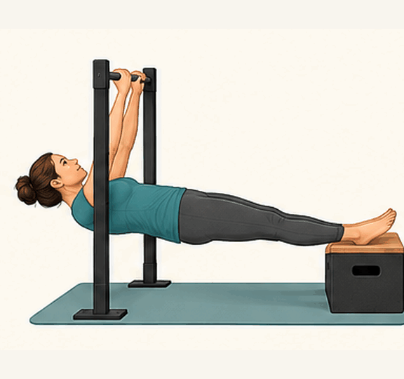
Feet elevated to make body horizontal, pull chest to bar from fully horizontal position. Max lat load.
3 sets × 8 reps · Rest 60s
Download GIF ↓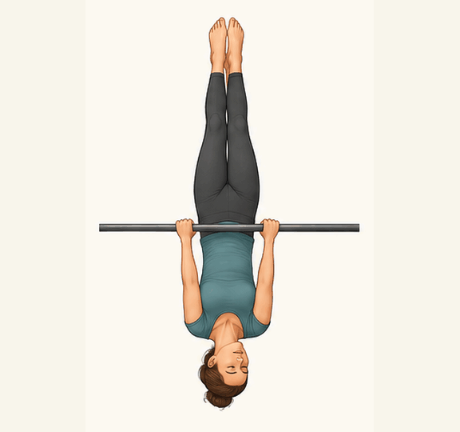
Hang inverted from bar (toes to bar then extend inverted), hold still. Builds inverted body awareness.
3 sets × 15s · Rest 45s
Download GIF ↓
Hang below bar with straight body, pull chest to bar. Lower with control.
Technique note: Feet-supported low-bar inverted row; shares the approved Hang to Row demonstration.
3 sets × 10 reps · Rest 45s
Download GIF ↓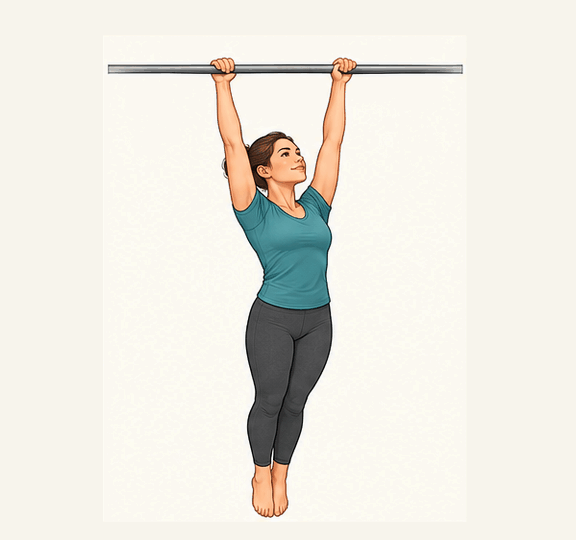
Use hip drive to generate momentum, then pull explosively. Gymnastics conditioning tool for volume.
3 sets × 15 reps · Rest 45s
Download GIF ↓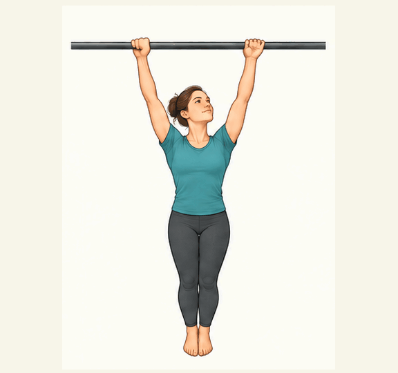
One hand pronated, one supinated on bar. Pull-up targets bicep and lat differently each set.
3 sets × 8 reps · Rest 45s
Download GIF ↓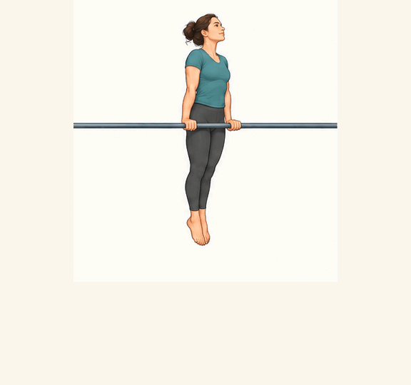
Start at top of muscle-up (in dip position above bar), lower slowly through transition to hang.
Technique note: Slow lowering through the bar transition; the loop resets to top support.
3 sets × 4 reps · Rest 90s
Download GIF ↓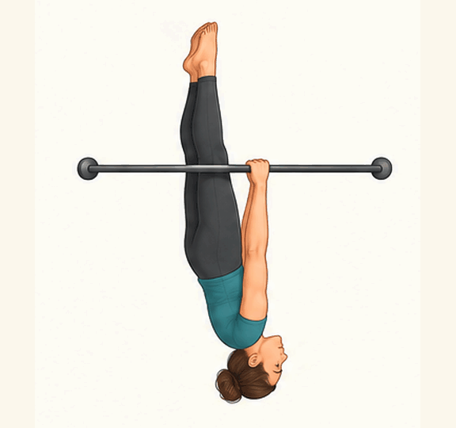
From inverted hang, lower body slowly to horizontal position. Resist throughout the descent.
Technique note: Side-view straight-arm lowering from inverted hang to horizontal; the loop resets after the hold.
3 sets × 5 reps · Rest 90s
Download GIF ↓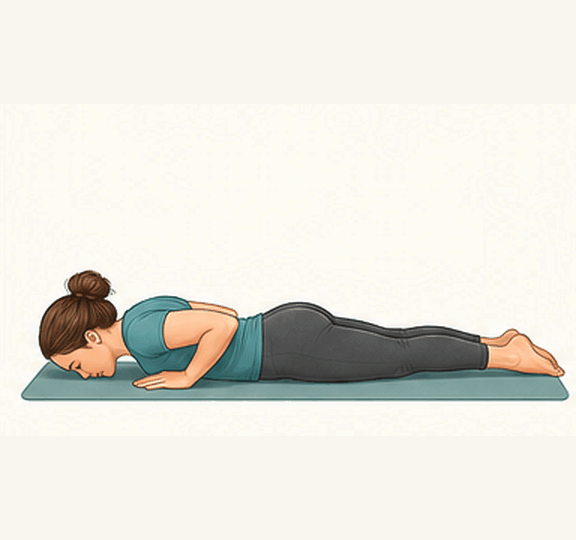
Lie face down, place hands by hips, press up through hands lifting chest. Hold at top.
Technique note: Gentle floor cobra variation with hands beside the lower ribs and pelvis grounded.
3 sets × 20s · Rest 20s
Download GIF ↓
Lie face down, raise arms to T position (directly to sides) squeezing rear delts. Lower slowly.
3 sets × 15 reps · Rest 20s
Download GIF ↓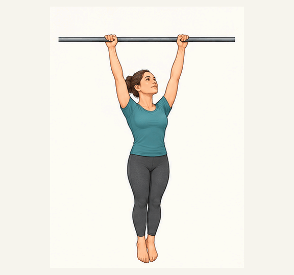
Pronated grip, pull chin above bar from dead hang. Controlled lower.
4 sets × 6 reps · Rest 60s
Download GIF ↓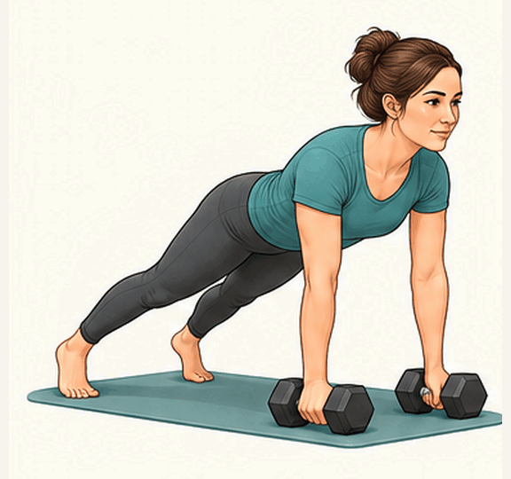
In push-up position with weights, row one arm at a time. Keep hips square throughout.
Technique note: One arm is demonstrated; repeat on the opposite side while keeping hips square.
3 sets × 10 reps · Rest 45s
Download GIF ↓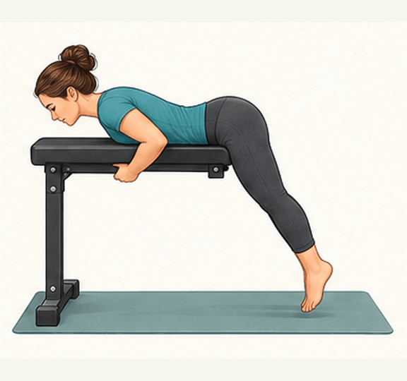
Lie on elevated surface, hang legs off edge, raise legs to horizontal using glutes and lower back.
3 sets × 12 reps · Rest 30s
Download GIF ↓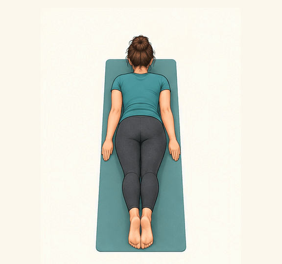
Lie face down arms at sides, trace arms from hips to overhead and back, keeping arms off floor.
3 sets × 10 reps · Rest 20s
Download GIF ↓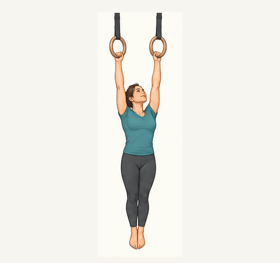
Pull-up using gymnastic rings. Rings allowed to rotate naturally. More shoulder-friendly than bar.
3 sets × 8 reps · Rest 45s
Download GIF ↓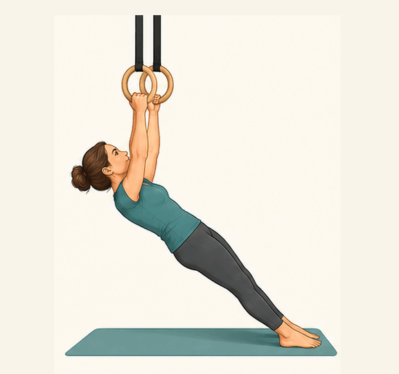
Heels on floor, body straight, pull chest to rings. Adjust angle for difficulty.
Technique note: Inclined ring row with both feet supported; adjust the body angle for difficulty.
3 sets × 10 reps · Rest 45s
Download GIF ↓From dead hang, retract scapulae to raise body slightly. No elbow bend.
3 sets × 10 reps · Rest 30s
Download GIF ↓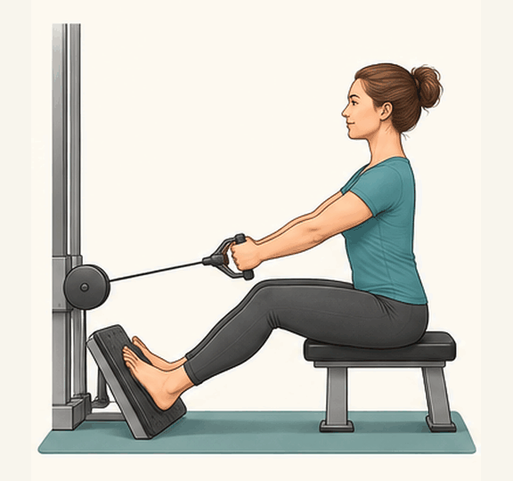
Sit facing anchor point, feet braced, row handles to lower ribs. Squeeze scapulae at finish.
3 sets × 12 reps · Rest 30s
Download GIF ↓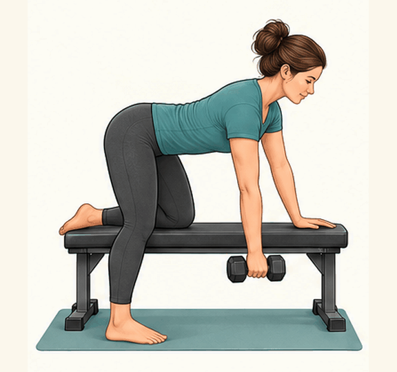
One hand and knee on bench, row dumbbell or band to hip with other arm. Squeeze at top.
3 sets × 12 reps · Rest 30s
Download GIF ↓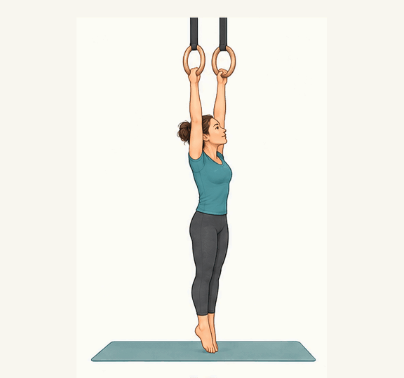
Hang from bar or rings, pike legs through to German hang. Return with control.
Technique note: Ring variation: tuck through to German hang, then reverse the path with control.
3 sets × 5 reps · Rest 60s
Download GIF ↓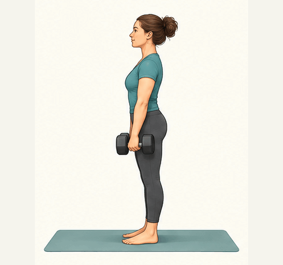
Hinge at hips with minimal knee bend, lower weights to mid-shin, drive hips to stand. Hamstring and back.
Technique note: Minimal knee bend distinguishes this variation from the Romanian deadlift.
3 sets × 10 reps · Rest 45s
Download GIF ↓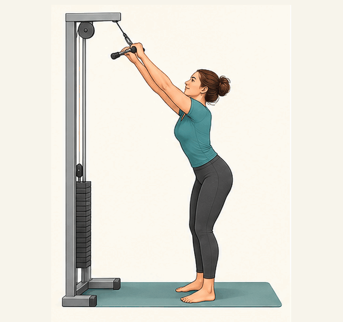
Stand facing anchor, arms straight, pull hands from overhead to hips. Lats only, no elbow bend.
3 sets × 12 reps · Rest 30s
Download GIF ↓
Lie prone, extend arms and legs and lift all four limbs off floor. Hold.
3 sets × 20s · Rest 30s
Download GIF ↓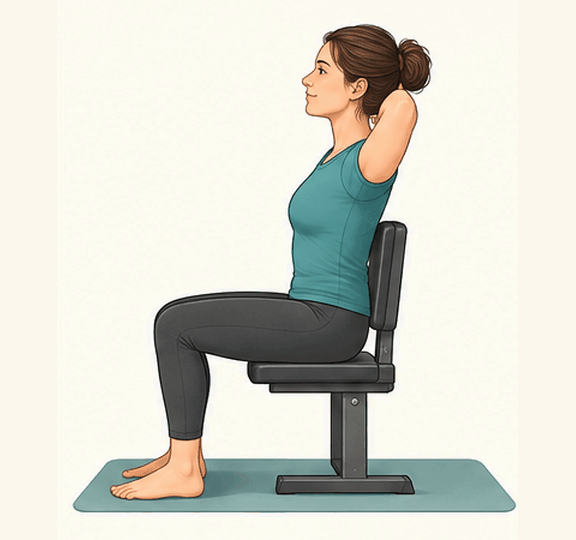
Sit upright, hands behind head, extend upper back over a foam roller or the edge of a bench.
Technique note: Seated variation over a padded bench-back edge, matching the library's seated option.
3 sets × 30s · Rest 20s
Download GIF ↓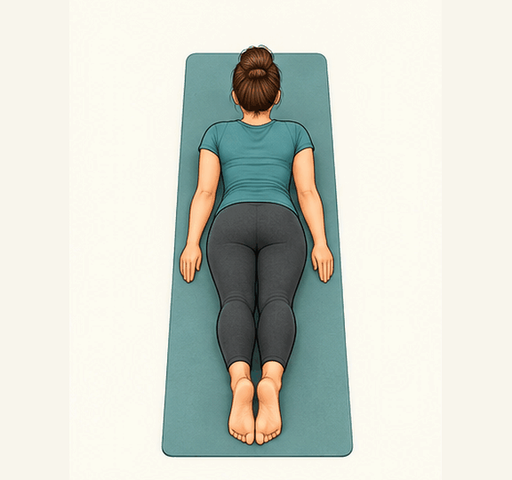
Prone on floor, raise arms into Y, then T, then W position. Hits all three lower trap fibers.
3 sets × 10 reps · Rest 30s
Download GIF ↓